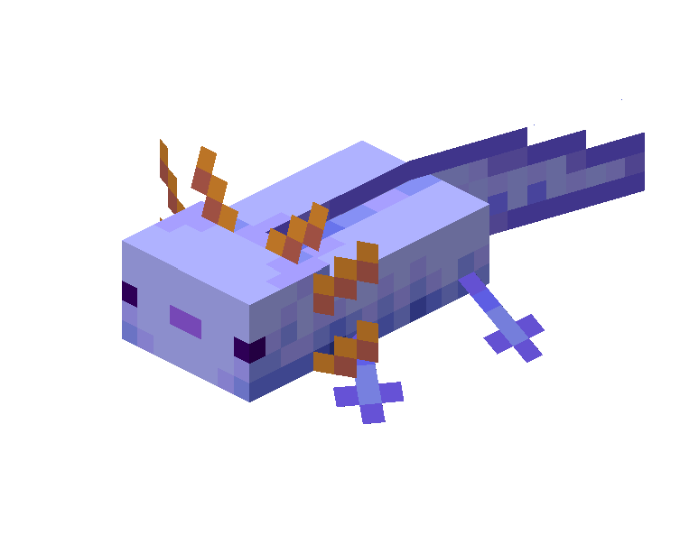

The basics

What I do
I make small websites. Mostly Minecraft ones, sometimes something else when I get an idea.
Everything is hand written, just HTML and CSS. No frameworks, never learned them.
Some are finished. Some I stopped halfway and never went back to.
They're all in My sites if you want to look.
The other big thing I do is collecting Roblox badges. That's on its own page, Badges.
Talking to me
You can say hi, I don't bite.
Just read the DNI list first please. It's short.
My links are in Socials.